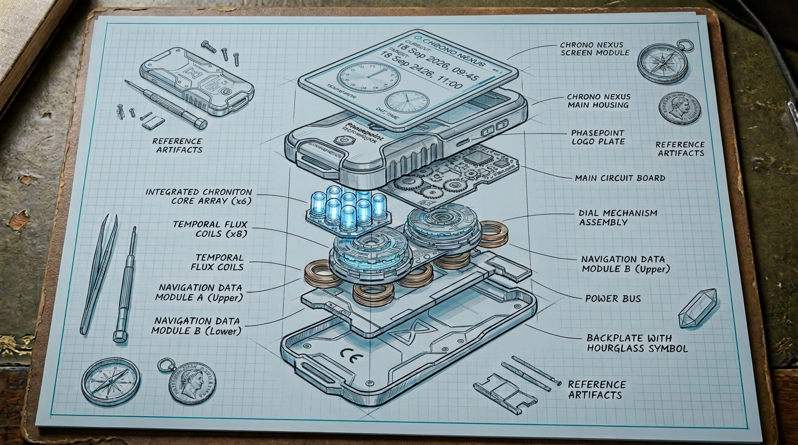
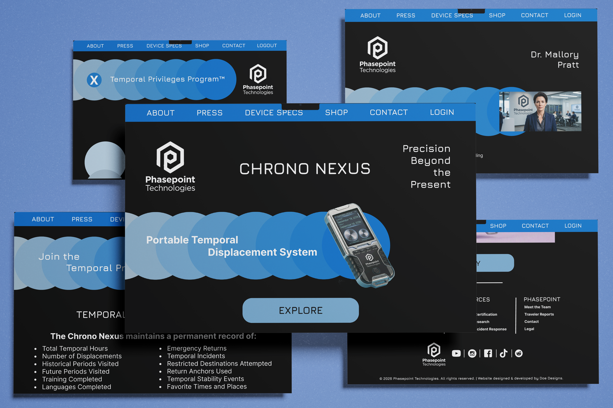

RESEARCH & DISCOVERY
Defined the product, its constraints, and its users.
- Established technology rules and safety requirements.
- Identified traveler needs and key content.
- Mapped the information architecture.
Figma
Adobe Photoshop
Adobe Firefly
Product Designer
UX/UI Designer
Web Designer
Independent Project
Brand Identity
Product Ecosystem
Website & UX/UI
AI-Assisted Visuals
Interactive Prototype
Adobe Firefly imagery
Envato Elements licensed assets and mockups
A fictional technology company. An impossible product.
A credible digital experience.
Phasepoint Technologies introduces the Chrono Nexus, a fictional device for controlled time travel. The challenge was to make this extraordinary technology feel like a sophisticated, believable product.
How do you help people understand, prepare for, and safely navigate a technology that doesn't exist?
Treat time travel like a legitimate technology product, not a science-fiction fantasy.



Defined the product, its constraints, and its users.
Built a connected product experience from concept to prototype.

A cohesive digital ecosystem for a fictional product.
Presenting an impossible technology with the visual language of a credible technology company.
A dark interface, controlled cyan and blue accents, geometric forms, and clean typography create a visual language inspired by aerospace and scientific instrumentation.
The circular graphic system references temporal movement. Dry humor lives in the product copy and corporate messaging, while the interface remains professional and restrained.

Explore the product ecosystem, from the company website to the traveler dashboard and device settings.
View Interactive Prototype
The experience follows the traveler's journey, from discovery to ongoing account management.
Explore the device, product features, pricing, and safety requirements.
Access training, language learning, and travel guidance.
Review destinations, requirements, and preparation details.
Keep device controls, safety information, and return systems central to the concept.
Review travel history, statistics, device settings, and account preferences.
Understand the return protocol and regain access to the designated point in time.
Courses & Tutorials

Temporal Privileges Program
Traveler statistics dashboard
Chrono Nexus device
Why wait for the future? Let's build something great now.
CONTACT ME